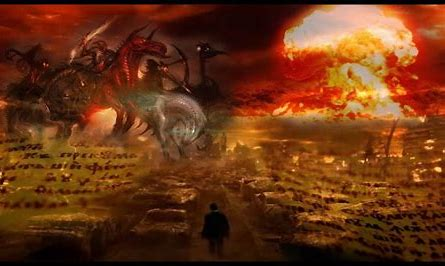
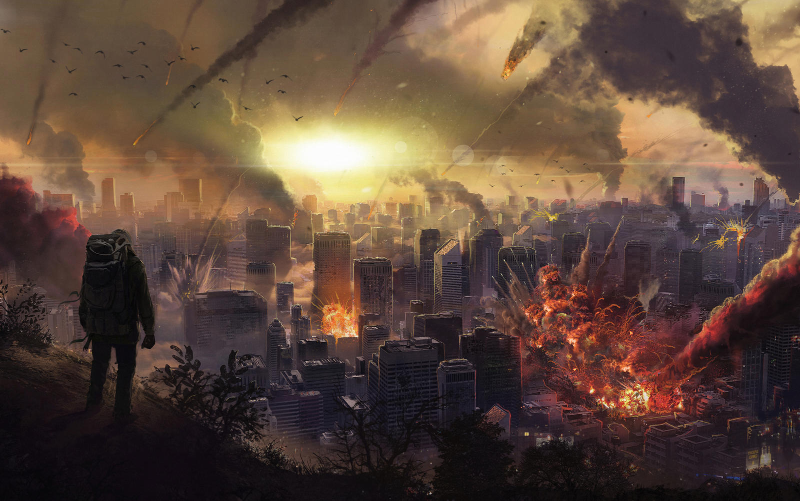
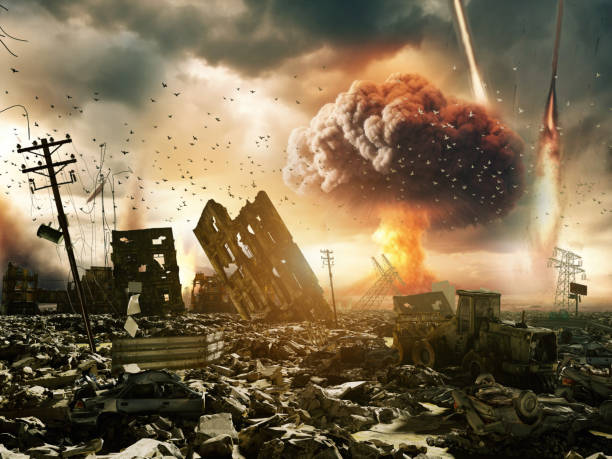

🐎 Preparing for the Pale Horse
Is this the end? That’s the question burning up debates right now — from late-night talk shows to survival forums, even Sunday pulpits. Some point to wars, pandemics, and economic collapse as proof that we’re living in Revelation. Others laugh it off as doomsday hysteria. But here’s the uncomfortable truth: whether or not you believe in prophecy, the signs of instability are everywhere.
Supply chains snap overnight. Food shortages spread faster than news cycles. Families already feel the pinch of inflation and scarcity. Add in natural disasters, global conflict, and the constant drumbeat of uncertainty — and you’ve got enough cause for concern to make even the most hardened skeptic take a second look.
This isn’t about fear-mongering. It’s about asking the real question: are you ready if things actually do fall apart? Because whether the end comes on the back of a pale horse, or just in the form of another blackout, war, famine, or social collapse, the unprepared will always pay the steepest price.
The Four Horsemen in Our Modern Age
The Red Heifers in Israel: Prophecy in Plain Sight?
In September 2022, something happened that barely made the headlines: five pure red heifers were flown into Israel from Texas. For many, this might sound like a quirky farm story. But for students of prophecy, it raised eyebrows worldwide.
According to Numbers 19, the ashes of an unblemished red heifer are required for purification before worship in a rebuilt temple can begin. For centuries, finding such an animal was thought nearly impossible — the slightest blemish, even two stray hairs of the wrong color, would disqualify it. And yet here they were, alive and well, in Israel.
Why does this matter? In Jewish and Christian eschatology, the rebuilding of the Third Temple on the Temple Mount is seen as a prophetic trigger. For some, the red heifers represent a step closer to that reality. For others, it's coincidence at best. But with tensions already boiling in Jerusalem, and the Temple Mount being the most contested religious site on Earth, this quiet development feels heavier than it looks.
When placed alongside global events — wars in Eastern Europe, rising unrest in the Middle East, food insecurity, pandemics, and the looming threat of nuclear conflict — it’s no wonder people are asking if these ancient symbols are aligning with today’s headlines. Revelation speaks of conquest, war, famine, and death riding across the land. Do the red heifers mark one more hoofbeat echoing into our modern world?
Whether you see them as holy signs or curious coincidences, the presence of these heifers reminds us: prophecy doesn’t live in the past. It breathes in the present.
When famine or supply collapse hits, food security is everything. Compact, long-shelf-life options like Emergency Food Bars ensure you and your family aren’t left hungry when stores go dark.
Signs in the Skies
Fire from the heavens. The phrase alone is enough to stir something ancient in us. Since the first storm lit up the night sky, humanity has looked upward with both awe and dread. Lightning, comets, meteors, every flash in the heavens carried a double meaning: natural wonder to some, divine warning to others. In today’s world, the imagery hasn’t lost its power. We live with the knowledge that the sky could burn for many reasons: a meteor strike like the one that ended the dinosaurs, nuclear fire unleashed by human hands, or the choking smoke of entire forests set ablaze in a warming climate. Science calls these statistical possibilities. Scripture, especially in the Book of Revelation, calls them signs of judgment. And that’s the razor edge where we stand. When the skies turn red—whether from natural disaster, human warfare, or something that feels biblical—the time for debating metaphor versus prophecy fades. History shows that civilizations fall not because they guessed wrong about the meaning of events, but because they failed to prepare. When the heavens burn, it won’t matter whether you interpret it as a cosmic accident or divine signal. The only choice that matters will be the one you make in that moment: act, or perish.
Clean water disappears faster than anything in a disaster. A rugged filter like the LifeStraw Peak Series makes rivers and puddles safe again. No sermons needed—just drink and live.
The Fragile Walls of Security
Preparing for Revelations: Survival in Uncertain Times
If you’ve ever walked through the rubble of disaster, you know how fragile walls really are. True security isn’t about police sirens racing down the street or government warnings flashing across your phone. It’s about whether your door holds for one more night, Wheter the flood-water keeps rising, whether your family can rest without fear, and whether the shadows outside pass by without realizing you’re inside.
When the world feels like it’s cracking, whether you see it through the lens of the Book of Revelation or just through modern chaos, safety is never guaranteed. It must be created. One choice, one habit, one boundary at a time.
1. Awareness Before Action
Most people fail in disaster not because they lack survival gear, but because they lack readiness. Do you know your exits? Do you recognize the sound of your home at night? Can you distinguish the difference between the wind rattling your windows and someone testing your lock? Awareness is the first tool in your prepping kit.
2. Fortify the Basics
Your front door is more than wood, it’s the last thin line between safety and intrusion. Even a small tool like an upgraded door stop alarm can turn an ordinary door into an early warning system. In a real crisis, minutes of notice can mean the difference between survival and regret.
3. Secure Your Resources
Food and water are always the first to vanish in disaster. Having a reliable filter like the LifeStraw Peak Series ensures you won’t gamble with contaminated taps. Pair it with emergency ration bars, and you’ve bought yourself more than calories—you’ve bought time, clarity, and control when panic sets in.
4. Extend Your Perimeter
Sometimes survival is about keeping problems at a distance. A Tactiko Wire Trip Alarm is a simple, effective way to secure a campsite, homestead, or even your backyard when society frays. Security isn’t about confrontation—it’s about deterrence.
5. Prepare for the Mental Battle
In the end times—whether literal or metaphorical—the greatest enemy isn’t always outside. It’s the fear inside your head. Staying grounded, studying history, and even reading resources like The End Times Survival Guide can help you balance faith, reason, and readiness without getting lost in paranoia.
The truth is this: in Revelations, in global collapse, or in your own personal trials, you will never eliminate danger. Get right with God and be smart and maybe you can tilt the odds. Each choice, each reinforced habit, each piece of preparedness gives you a better chance to remain standing when others fall.
Peace is the rehearsal. Prepping is the show. And when the shadows lean in, the work you’ve done before determines whether they pass by or come straight through your door.
I don't want to spend tons of money on a high-end security system when small inexpensive devices can buy you big peace of mind. The Tactiko Wire Trip Alarm creates a simple but effective perimeter—whether you’re protecting a campsite, your family, or your sanity.
Faith, Doubt, and the Space Between
Preparing for Revelations: Prophecy, Metaphor, and Reality
For two millennia, people have debated the meaning of the Book of Revelation. To believers, it is prophecy. A glimpse into the events that will shake the earth before the return of Christ. To skeptics, it is metaphoric, symbolic language used to describe the psychological and political turbulence of ancient times. But wherever you fall on that spectrum, one truth is undeniable: life is fragile, and the systems we depend on are more breakable than we’d like to admit.
The past decade alone has shown how quickly “normal life” can evaporate. A virus brought the world to its knees. Global supply chains collapsed overnight. Inflation made groceries feel like luxuries. War in Europe reignited fears of nuclear confrontation. These are not abstract worries; they are daily headlines. Whether you call it prophecy, probability, or just bad luck, the parallels to Revelation are too sharp to ignore.
Beyond Stockpiles: The Real Meaning of Preparedness
Too many people think prepping is just about hoarding beans and ammunition in the basement. But true preparedness is deeper than stockpiles. It’s about resilience—the ability to face uncertainty without crumbling. That means training your mind and body, building habits that become second nature, and equipping yourself with tools that give you more options when the world strips them away.
Preparedness is not paranoia. It’s an act of honesty. It’s admitting that governments fail, shelves empty, and storms don’t ask for permission. In Revelation or in reality the lesson is the same: survival favors the prepared.
Modern Signs That Echo Revelation
- Conquest & War: From Ukraine to the Middle East, conflict spreads faster than peace agreements can be signed.
- Pestilence: Global pandemics showed us how fragile health systems really are, and how easily fear spreads.
- Famine: Food prices spike while farmland dries out or floods. Nations hoard grain, and shortages ripple worldwide.
- Death: Natural disasters, violence, and systemic collapse echo the fourth horseman more than we’d like to admit.
Whether you interpret these as divine warnings or human-made disasters, the results feel the same: instability, fear, and the urgent need to prepare.
Building Your Ark: Practical Prepping Essentials
You don’t need a bunker in the mountains to prepare. You need smart, strategic essentials that give you an edge when order breaks down.
1. Water: The First Priority
Humans can survive weeks without food, but only days without water. In a crisis, taps can run dry, pipes can burst, or contamination can spread overnight. A reliable water filter is the difference between life and death.
The LifeStraw Peak Series Water Filter is lightweight, compact, and field-tested. Whether you’re drinking from a creek, puddle, or questionable tap, it makes unsafe water safe in seconds.
2. Food Security
Grocery stores operate on “just-in-time” delivery. That means they can be stripped bare in hours during a crisis. Preppers know that calories equal control—and hunger breeds panic.
Shelf-stable rations like Emergency Ration Bars provide thousands of calories in a small, portable package. Think of it as modern manna—compact, durable, and life-saving.
3. Security When Order Breaks Down
Safety isn’t guaranteed when law enforcement is overwhelmed. Protecting your home or camp often comes down to simple deterrents.
A compact system like the Tactiko Solar Charging Wire Trip Alarm gives early warning if intruders breach your perimeter. Pair it with an Upgraded Door Stop Alarm, and even a locked door becomes a stronger barrier against chaos.
4. Mental & Spiritual Resilience
Fear can kill faster than starvation. Staying grounded in crisis is what separates survivors from victims. That’s why resources that combine wisdom and strategy matter.
The End Times Survival Guide provides biblical strategies for hope and resilience. Whether you read it as faith or metaphor, the lessons keep you calm, disciplined, and focused under pressure.
Practical Habits for Everyday Prepping
- Repetition training: Practice lighting a fire, purifying water, or securing your home until it’s second nature.
- Inventory rotation: Eat what you store, and store what you eat. Rotate supplies so nothing goes to waste.
- Situational awareness: Learn to notice exits, sounds, and shifts in your environment. Awareness buys you time.
- Community ties: Lone wolves rarely survive long. Build networks of trust—neighbors, friends, family—before disaster strikes.
The Bigger Picture
Whether or not you believe Revelation is unfolding before our eyes, the wisdom is the same: prepare as if tomorrow might test you. Because it will—if not with famine and fire, then with personal trials like job loss, storms, or illness. Preparation doesn’t make you paranoid; it makes you present. It makes you ready.
“Peace is the rehearsal. Prepping is the show. And when the shadows lean in, the work you’ve done before decides whether they pass by—or come straight through your door.”
The final choice is yours. Whether you see Revelation as prophecy or metaphor, the lesson is the same: resilience is survival. Prepare not out of fear, but out of resolve. Because when the storm comes—and it will—you’ll want more than hope. You’ll want to be ready.
Security When Order Breaks Down
In Revelations — biblical or personal — safety is not guaranteed. You create it one boundary at a time. A compact tripwire system like the Tactiko Wire Trip Alarm can alert you to intruders in camp or at home. Pair it with something simple yet effective like an Upgraded Door Stop Alarm, and even a locked door becomes a stronger line of defense.
The Bigger Picture
Whether or not you believe Revelation is unfolding before our eyes, the wisdom is the same: prepare as if tomorrow might test you. Because it will — if not with fire and famine, then with layoffs, storms, or personal loss. Preparation doesn’t make you paranoid; it makes you present. When the world shakes, you stand.
Final Thought: Whether you’re a believer, a skeptic, or somewhere in between, preparedness is the bridge between fear and freedom. Prophecy or metaphor, it all points to the same truth: resilience isn’t just survival, it’s the path to living with courage in uncertain times.
The Gift of Preparation
Prepping for revelations isn’t about paranoia—it’s about refusing to go blind into the storm. Whether you see it as prophecy or probability, the truth is simple: collapse comes for every empire, every family, every individual. The choice is whether you meet it unprepared, or whether you stand ready, eyes wide open, with faith in your chest and the right tools in your hands.
Because in the end, revelations—big or small—don’t ask for permission. They arrive. And what you do in those moments decides whether your story continues.